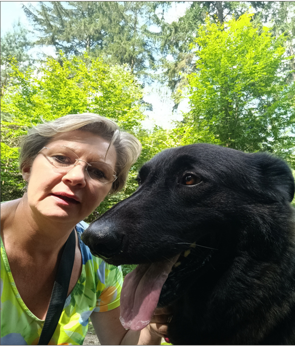
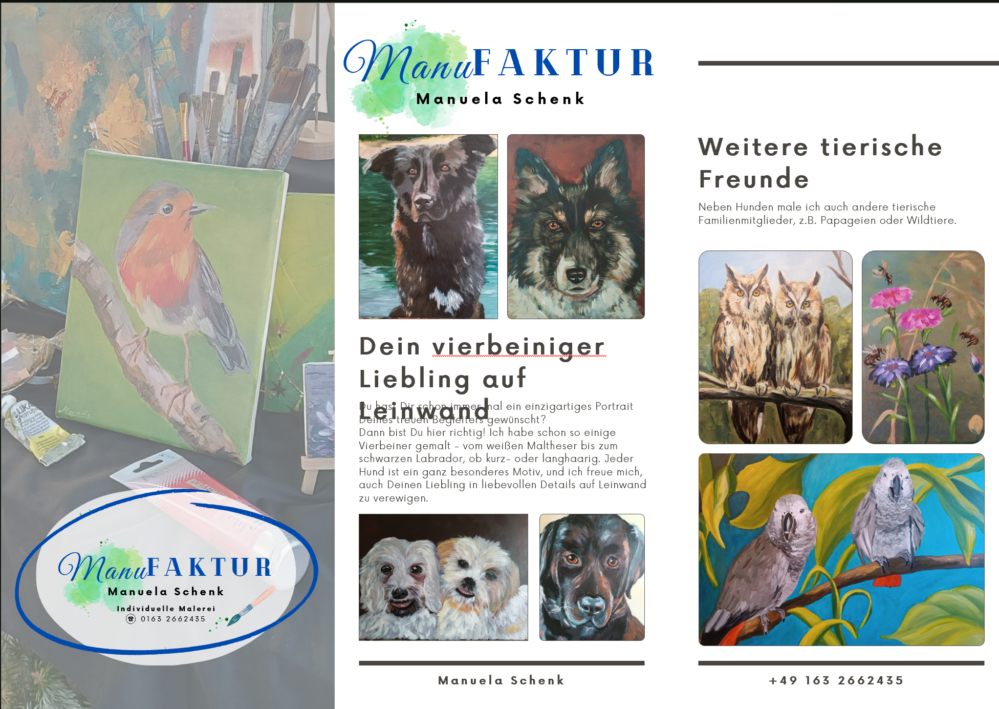
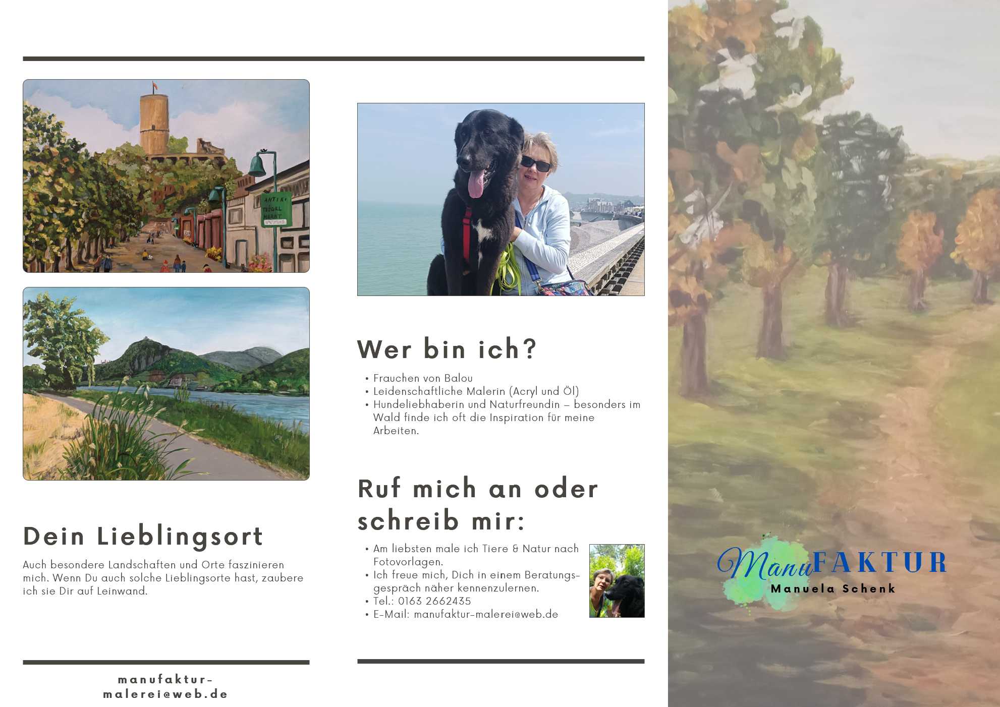

Über mich
Lerne die Künstlerin hinter den Bildern kennen.

Steckbrief
- Wohnort: Bonn
- Frauchen von: Balou
- Motive: Tierportraits und Landschaften
- Techniken: Acryl, Öl, Mischtechniken
- Motivation: Freude am Erschaffen und Festhalten von Momenten
Hallo, ich bin Manuela,
...Künstlerin aus Bonn, Hundeliebhaberin und Frauchen von Balou
Ich liebe es, besondere Momente, Tiere oder Landschaften mit Farbe und Pinsel festzuhalten.
Meine Werke erzählen Geschichten: sei es der treue Blick eines Hundes oder die beruhigende Weite einer Landschaft.
Ich male das, was mich anspricht und mir gefällt, in Acryl- oder Öl. Ich arbeite auch in Mischtechniken, die es mir ermöglichen, besondere Effekte zu erzielen.
Jedes Bild ist ein Unikat, welches mit viel Liebe zum Detail und handwerklichem Geschick entsteht.
Gerne male ich auch für Dich! Schau Dir meine Leistungen an oder stöbere durch die Bildergalerie.
Herzlichst, Manuela
Mein Weg zur Kunst
Die Entdeckung
Alles begann mit einem Malkurs an der Volkshochschule. Die Leidenschaft für Farben und Formen war sofort geweckt.
Das erste Tierportrait
Ich malte meinen ersten Hund "Balou". Die Resonanz von Freunden und Familie war überwältigend und motivierte mich weiterzumachen.
Gründung der ManuFAKTUR
Aus dem Hobby wurde Berufung. Ich richtete mein professionelles Atelier in Bonn ein und nahm erste Auftragsarbeiten an.
Kunst für Dich
Heute darf ich Menschen mit meinen Bildern glücklich machen und einzigartige, bleibende Erinnerungen schaffen.
Handgemalte Präzision: Vorher & Nachher
Schiebe den Regler, um die Vorlage mit dem fertigen Acrylgemälde zu vergleichen:
 Handgemaltes Gemälde
Handgemaltes Gemälde
 Original Fotovorlage
Original Fotovorlage
Mein Info-Flyer
Klicke auf ein Bild für die Großansicht oder lade dir den Flyer als PDF herunter.


Flyer herunterladen (PDF)
Digitale Visitenkarte
Bewege die Maus über die Karte oder tippe sie an, um sie umzudrehen.
Manuela Schenk
Künstlerin & Inhaberin- +49 163 2662435
- manufaktur-malerei@web.de
- Bonn, Deutschland
- www.manufaktur-schenk.de